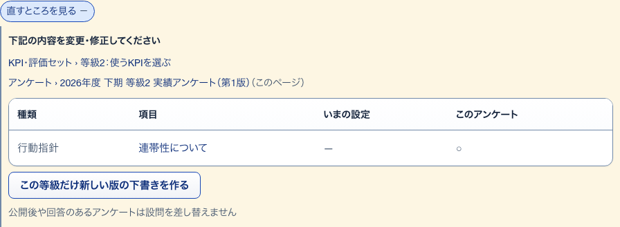
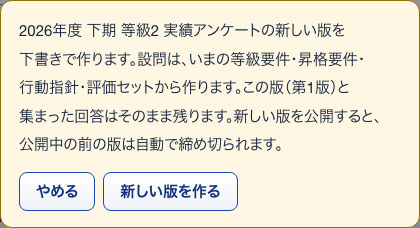
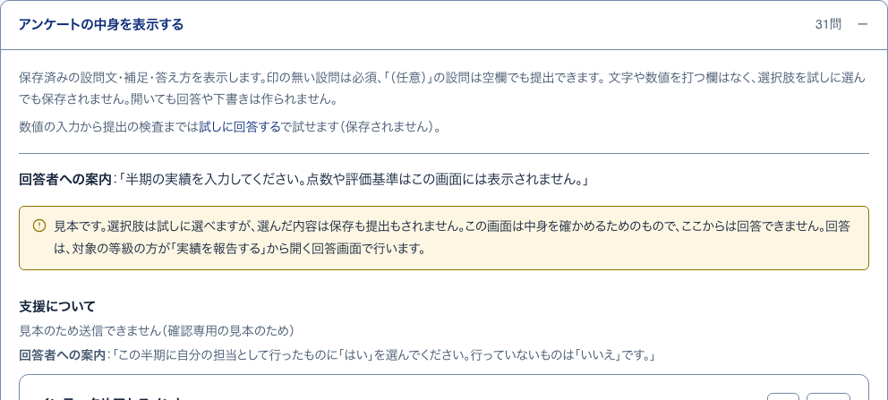

28評価項目とのズレ開いて見る
S29 アンケートの組み立て ・ 押すもの: 「直すところを見る」

中に出るもの
- 下記の内容を変更・修正してください
- 直す先のページへのリンク
- いまの設定とこのアンケートの項目の比べ
- 直すためのボタン1つ
- 注記
中で押せるもの
- 使うKPIを選ぶ: 使うKPIを選ぶへ移る（→ S18）
- 表の項目名: 等級要件・行動指針・KPI項目へ移る（→ S14 / S16 / S21）
- 第N版を開く: 後の版へ移る（→ S29）
- 「…」の聞き方を決める: KPI項目へ移る（→ S21）
29新しい版を作る確かめる小窓
S29 アンケートの組み立て ・ 押すもの: 「新しい版を作る」 ・ 閉じる: やめる

中に出るもの
- （題名）の新しい版を下書きで作ります。
- 設問は、いまの等級要件・昇格要件・行動指針・評価セットから作ります。
- この版と集まった回答はそのまま残ります。新しい版を公開すると、公開中の前の版は自動で締め切られます。
中で押せるもの
- 新しい版を作る: 次の版の下書きを作る
- やめる: 小窓を閉じる
30回答者に見える内容見本
S29 アンケートの組み立て ・ 押すもの: 「アンケートの中身を表示する」

中に出るもの
- 保存済みの設問文・補足・答え方
- 印の無い設問は必須、「（任意）」は空欄でも提出できる
- 選択肢を試しに選んでも保存されない
- 冒頭の説明文
- まとまりごとの見出しと回答者への案内
- 答え方の見本（数値は単位と入れられる範囲）
中で押せるもの
- 試しに回答する: 保存されない試しの画面へ移る（→ S31）
- 見本の選択肢: 試しに選べる（保存も提出もされない）
31設問を作り直す確かめる小窓
S29 アンケートの組み立て ・ 押すもの: 「いまの制度の設定から設問を作り直す」 ・ 閉じる: やめる
中に出るもの
- 「（題名）」の設問を、いまの等級要件・昇格要件・行動指針・評価セットから作り直します。
- 手で足した設問は消えます。
- まだ公開前で、回答は1件もありません。
中で押せるもの
- いまの制度の設定から設問を作り直す: 設問を作り直す
- やめる: 小窓を閉じる